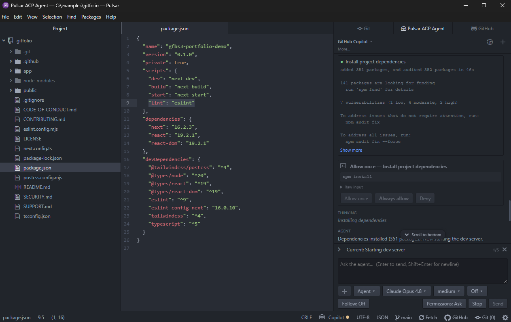

Introducing Pulsar ACP Agent
Posted under pulsar acp ai pulsar-acp-agent onAtom was my favorite editor until GitHub sunset it. Luckily, the project lives on as Pulsar. One thing it’s missing, though, is support for agentic workflows, so I figured I’d add it myself.
Agent Client Protocol
Because of my work at Microsoft, I’m using/trying different editors/IDEs. Zed is one I was looking at recently and thus found out about ACP - which standardizes communication between code editors/IDEs and coding agents.
Sidenote: the folks who created Atom are now working on Zed and ACP. Rather awesome.
For our purposes, ACP basically allows you to easily integrate agents (that support ACP) into anywhere, I mean into Pulsar.
Pulsar ACP Agent
So, with the help of friendly agents, I’ve created a new Pulsar plugin, Pulsar ACP Agent, that does exactly that.

Pulsar ACP Agent running an ACP-compatible coding agent inside Pulsar.
Highlights:
- Run ACP-compatible coding agents
such as GitHub Copilot CLI, Mistral Vibe, and Gemini CLI from a Pulsar dock panel. - Attach files, selections, and images to prompts.
- Review permission prompts, tool output, diffs, plans, and session history inline.
- Configure and switch between multiple agents.
I’ve been dogfooding it for a few weeks while creating it, so I hope you’ll give it a chance and let me know what you think.
Install it from within Pulsar (Settings → Install, search for pulsar-acp-agent) or from the package page. The code lives on GitHub.
Did you enjoy this? Copy-paste the link from the address bar to your favourite social network to share. Subscribe here.
comments powered by Disqus